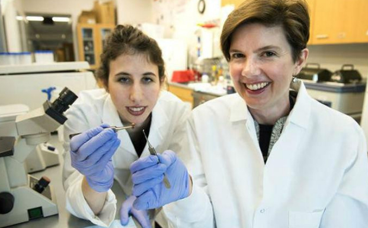
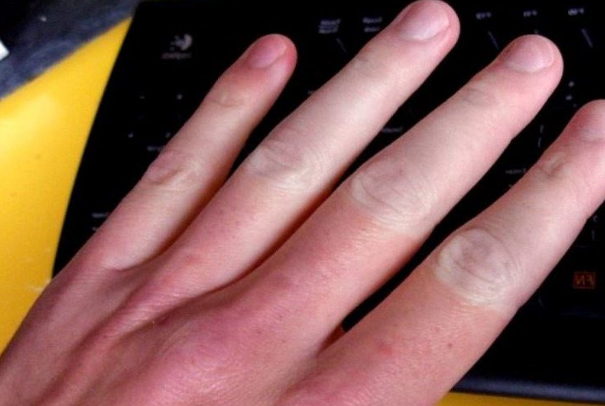

Nổi bật
Ứng dụng khoa học công nghệ trong y học tại Australia
Tại Australia, công tác nghiên cứu và ứng dụng trong y học đã đem lại nhiều lợi ích cho xã hội, mở ra những hướng mới cho những phương pháp điều trị hiệu quả. Khoa học công nghệ đang ngày càng chứng minh sức mạnh trên mọi lĩnh vực, đặc biệt trong y tế. Ở các nước hiện đại, công tác nghiên cứu và ứng dụng trong y học đã đem lại nhiều lợi ích cho xã hội, mở ra những hướng mới cho những phương pháp điều trị hiệu quả các căn bệnh phức tạp.
Công nghệ Big Data trong Y học

Asadi là nhà sáng lập, đồng thời là Giám đốc điều hành của công ty Bina, công ty chuyên về các lĩnh vực chăm sóc sức khỏe. Mục tiêu của Bina là đưa y tế gần gũi hơn và phù hợp với điều kiện của mỗi người. > Big Data 'xâm lấn' thể thao Tại đây, công nghệ Big Data được áp dụng vào phân tích gen, giúp phân tích trình tự bộ gen người trong một vài giờ, thay vì tới hàng tuần như trước kia.
Công nghệ y học
Bước tiến y học khiến nhân loại mừng rỡ: Vá tim bằng công nghệ 3D
Các nhà khoa học Mỹ đã tạo ra một cuộc cách mạng y khoa trong việc phục hồi các mô tim bị sẹo, di chứng của một cơn đau tim, bằng miếng vá 3D. Đây được xem là một bước tiến vô cùng quan trọng trong điều trị mô tim bị tổn thương cho người bệnh.
Công nghệ hiện đại có giúp con người trẻ mãi không già?
Khoảng 150 năm trước, trước khi y học hiện đại ra đời, tuổi thọ trung bình của con người là khoảng 40 năm. Trong hơn một thế kỷ, y học hiện đại đã tăng gấp đôi tuổi thọ trung bình của con người. Với trí tuệ nhân tạo, robot và các đột phá khoa học, liệu chúng ta có thể trẻ mãi không già?
Công nghệ và y học có thể giúp con người kéo dài tuổi thọ như thế nào?
Một trong những thành tựu tuyệt vời nhất của thế kỷ 20 là chúng ta đã cải thiện được đáng kể độ dài tuổi thọ. Tiến bộ y học, điều kiện sống được cải thiện, các chiến dịch chăm sóc sức khỏe cộng đồng và xóa sổ bệnh truyền nhiễm... đã giúp con người ngày một sống lâu hơn và khỏe mạnh hơn khi về già.
Cơ thể sẽ biến đổi ra sao khi nhiệt độ giảm xuống 10 độ C?
Đây là những điều sẽ xảy ra với cơ thể bạn khi phải đối mặt với cái lạnh tê người ngoài kia. Nhiệt độ có thể xuống thấp 11 - 14 độ C, có nơi dưới 10 độ C. Trời trở lạnh, cùng mức nhiệt giảm mạnh có thể khiến chúng ta thay đổi cả về vật chất và tinh thần. Nhưng chuyện gì sẽ xảy ra khi cơ thể phải đối mặt với thời tiết giá lạnh dưới 10 độ C?